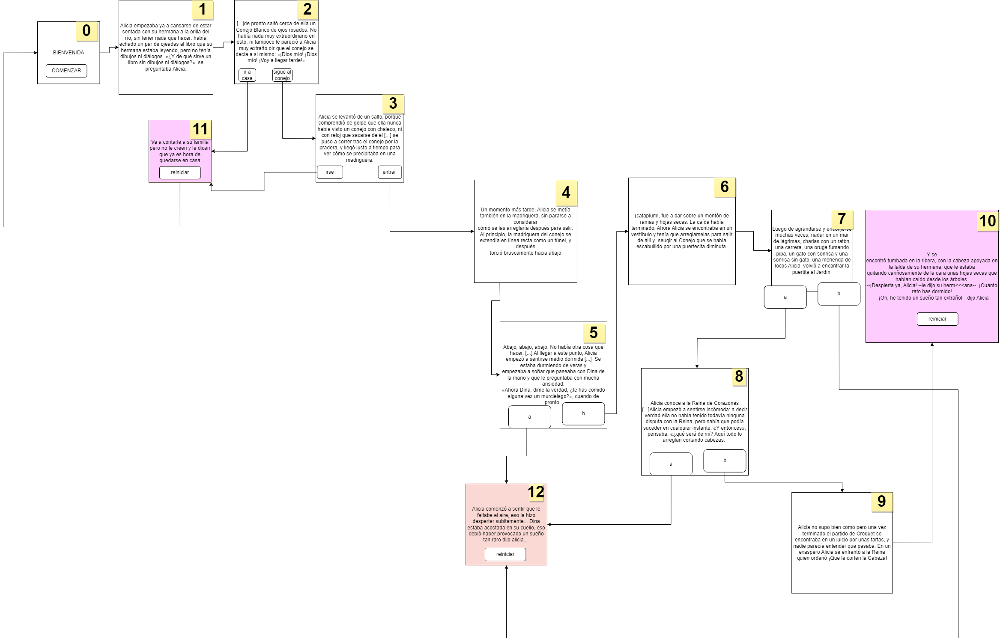

Tal vez lo mas difícil (a parte de sentarme a escribir el código) fue seleccionar porciones chicas de texto que me permitieran contar la historia sin perder su idea principal.
Las historias al estilo "elige tu propio camino" siempre fueron algo que llamó la atención del publico ya que son un tipo de narrativa interactiva. Este enfoque interactivo ha sido popular en libros, especialmente en la literatura juvenil, así como en juegos de mesa, videojuegos y aplicaciones interactivas en línea. La esencia de estas historias radica en brindar a los participantes la sensación de control y agencia sobre el curso de la narrativa, proporcionando una experiencia única y personalizada en cada lectura o juego.

Por lo tanto la idea principal al diseñar esta aventura gráfica es ofrecer opciones al lector en puntos clave de la trama. Dependiendo de la elección que haga el lector, la historia se desarrolla de manera diferente, con diversos giros y desenlaces posibles. En este caso primero se diseñó un esquema de pantallas para evidenciar los distintos caminos y en consecuencia finales.
Una vez terminada la diagramación vino la parte complicada, escribir el codigo. El trabajo original se realizo en Java y luego se trasladó a P5JS, si bien el cambio de lenguaje fue un desafío la posibilidad de modularizar el código en clases y objetos permite un mejor control de cambios y un debuggeo mas ágil.
Por último se agregó un minijuego que es parte de la historia principal, en mi caso Alicia debe capturar al Conejo Blanco.